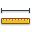

Próximos Treinos
| Tipo de Treinamento | O que você deve fazer |  | ||||
|---|---|---|---|---|---|---|
| Qui, 11 - Ago | Continuo com intensidade estável | Faltou ar. Fiz a primeira serie de 2 por 2 e depois mudei de 3 para 1. Completei os 16 bem cansado. Pace de 6'10 | 2.41 km | 0h 16m 0s | 0 | a |
| Qui, 11 - Ago | Continuo com intensidade estável | Faltou ar. Fiz a primeira serie de 2 por 2 e depois mudei de 3 para 1. Completei os 16 bem cansado. Pace de 6'10 | 2.41 km | 0h 16m 0s | 0 | a |
| Qui, 11 - Ago | Continuo com intensidade estável | Faltou ar. Fiz a primeira serie de 2 por 2 e depois mudei de 3 para 1. Completei os 16 bem cansado. Pace de 6'10 | 2.41 km | 0h 16m 0s | 0 | a |
Top 10 Endorfinados
Conheça os endorfinados que mais correram. Veja como fazer parte desse grupo
Perfomance
Que tal melhorar sua performance? Conheça aqui uma análise gráfica detalhada do seu desempenho.